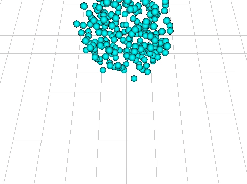
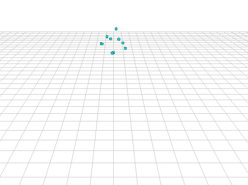
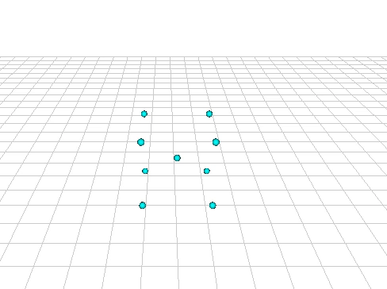

Ziyan Xiong
Currently, I have completed a simple simulator. It can simulate the collision of particles with the ground and walls as in the Fig.1. I use the blue balls to represent each particle. By assigning their initial position and velocity, their movements are calculated automatically thorough updating their position and velocity in next time step based on the force applied on each particle. In this example, the particles are affected by the gravity and dampen force to make the system stable.

Fig.1 The simulation of particles affected by gravity.
I then add the mass and spring system to the simulator. With this mass and spring system, the particles can interact with each other. The effects are shown in Fig.2. Now each particle is connected to others with a spring. When the distance between two particles are longer or shorter than the rest length of this spring, the system will generate a spring force applied on related particles to make them stay close to the rest length. The stiffness of this spring is controlled by a variable ks. With smaller ks, the movement of a particle group will look like fluid and with bigger ks it will look like solid body. However, it is still not realistic in both simulating the fluid and solid using the spring and mass system only. A more terrible consequence is that the system will become extremely unstable with large ks. Even a small time step will cause the simulation to explode. The time step which is small enough to make the system stable will be too small to make any progress in the simulation.

Fig.2 The simulation with mass and spring system.
There are many existing solutions to this problem, I choose to use the constrained dynamics. This approach will calculate extra constraints for each particle. One of the constraint is making the distance between two particles a constant instead of using the spring to connect particles which is like connecting them with a rod. By choosing specific constraints, the collision between particles and connecting particles with ropes can be easily achieved. Fig.3 shows a soft cube falls into the ground. The center particle is connecting with each particles using the 'rod' and the rest of them are connecting with each other using the spring.

Fig.3 The simulation with constrained dynamics.
At present, my work focus on the simulation part. I have addressed some problems such as how to simulate the interaction of simple objects(mass and spring system) in simple scenario (hitting the ground). Compared to the listed goals, I have finished some tasks or at least the foundation of some tasks in the second update task and final goals. However, current model is not realistic enough, I choose to work on later tasks because they are simpler compared to the fluid and cloth simulation and I think it is beneficial to start with something practical.
In next step, I will start working on more realistic representation of the soft objects. With reading more papers about fluid simulation in depth, I think it is not necessary to simulate the fluid to represent soft objects. Instead, I can apply some concepts in Smoothed-particle hydrodynamics to current simulator to create more realistic effect. For the surface the soft objects, I have two plans to be tested. The first one is add special particles on top of the particles for the simulation of the inner part of the objects which has their own constraints and attributes. Then using these points as control points for describing a surface. The seconds one is using all of the particles and calculate the surface that contains all of the particles.
With current work, if I can find a way to represent the soft objects then I can finish the task listed in second updated as planned. Therefore, my goal for the second update is to complete a system where the soft objects can interact with the environment correctly and realistically and final goal will be the collision of soft objects and other common rigid objects. If these goals are completed in advance, I would like to complete a system which simulates the soft objects moving following external forces without explicit designation.